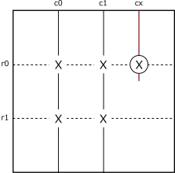
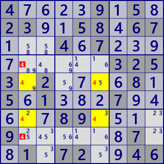
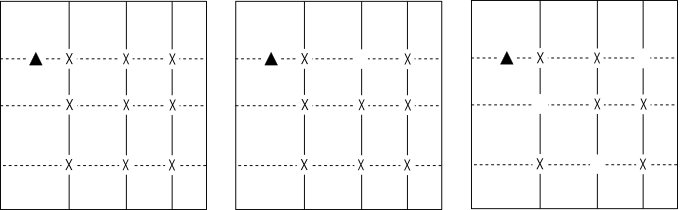
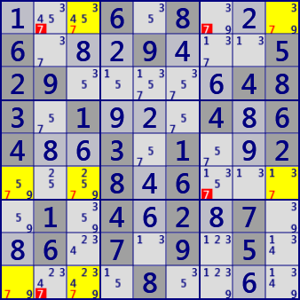
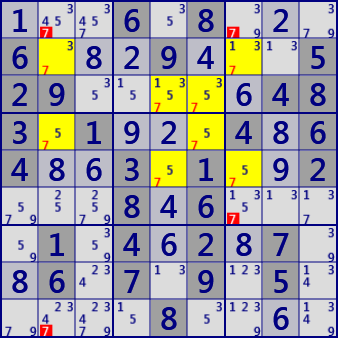

数独解析アルゴリズムを理解するには、なるべく早い段階でHouseに慣れるとよいでしょう。 以下のアルゴリズム解説でも、具体的な数独盤面ではなく、制約関係のHouseで行います。
X-Wing / Fish
数字Xに着目したとき、数字Xが次のように配置されているとします。列c0では数字Xの位置は行r01c0のどちらかであり、
列c1でも行r01c1のどちらかとします。このとき、セルr0cx(印）では数字Xは候補数字から除外できます。
これはr01c01の4つのセルが数字Xに関してLocked(限定状態）にあることによります。

Fish
BaseSet(実線)の列では2つのセルのどちらかが数字X。CoverSet（破線）はBaseSetを完全に含む。
また、CoverSetはその他にセル(丸印)を含んでいる。丸印の位置に数字Xがあると、BaseSetに数字Xを配置できない。
丸印の位置の数字Xは除外される。（BaseSet、CoverSetは以下で説明）
数字4に着目すると、BaseSet(r57)、CoverSet(c26)のX-Wing成立。R47C2のセルから数字4は除外される。

4....9.5.23..58.67...4.7.........3253.2....8.5.1...7.....89....9......7..1.72..46
X-Wingは「Fish」の別名称を用いることもあります。また、3次以上のFish にも名前がついています。 以下では、より一般的に解説するので、全てFishを用います。- 2次: X-Wing
- 3次: SwordFish
- 4次: JellyFish
- 5次: Squirmbag
- 6次: Whale
- 7次: Leviathan
また、 3次以上のFishでは、図に示すように一部が欠けているパターンでもFishが成立します。 この欠けている部分は、確定済みのセルか、単にそのセルの候補に着目数字がない場合があります。

Fish系アルゴリズムには、数種の方法の拡張が知られています（以下で扱います）。 その準備として ”BaseSet”、”CoverSet”を定義します。
BseSet/CoverSet(重なりなし）
Fish系の解法では、2組のhouseを用います。数字Xに着目し、数字Xを最大N個(Nは次数）含むhouseをN個選び、これをBaseSetと呼びます。
BaseSetのHouseは重なりがないとします。
また、BaseSetを完全に含むように、もう1組のN個のHouseを選びます。これをCoverSetと呼びます。
CoverSetについてもHouseは重なりがないとします。
このように選んだ、BaseSet、CoverSetの共通部分はLocked(限定状態）にあります。
BaseSetのHouseでは、どこかは決まらないが、必ず1セルは数字Xです。
CoverSetについても同じです。左図SwordFish(3次Fish）でLocked(限定状態）を確認してください。
(BaseSetの定義にのみ"最大"がつくことに注意してください）
CoverSetはBaseSetを完全に含みますが、その他にBaseSet以外のセルを含んでもかまいません。
解法としては、その他のセルZを含むことに意味があります。セルZに数字Xが入ることは、BaseSetのLockedを壊します。
つまりセルZの候補数字から数字Xは除外できます。
まとめると、次のようになります。
【N次Fish】
着目数字Xについて、N個以下のXを含むhouseをN個選んだとき（BaseSet）、これとは別のN個のHouse(CoverSet)がBaseSetを完全に含むなら、
BaseSetはLockedである。Lockedを壊す位置にある候補数字Xは除外できる。
なお、BaseSetとCoverSetをそれぞれ構成するHouseには重なりはないとする。
BaseSet、CoverSetの概念を十分に理解しておく必要があります。
BaseSetはhouse内の位置は確定しないがそのどこかに着目数字が存在する状態であり、
例えば先の図の3次Fishの場合では、それぞれの縦の列のどこか1ヶ所づつに着目数字があるLockedです。
もしも、横行の丸印以外の位置に着目数字があると(▲印）、その行の丸印のどこにも着目数字が入らず、
Lockedが壊れてBaseSet全体に着目数字を入れることができなくなります。
次の図は、SwordFish(3D-Fish)と JellyFish(4D-Fish)の例です。
これらは同じ問題の同じ局面の双対Fishです。除外されるセル・候補数字は同じです。

SwordFish #7
（3D-Fish）
BaseSet : c139
CoverSet : r169

JellyFIsh #7
（4D-Fish）
BaseSet : r2345
CoverSet : c2567
...6.8...6...9...529.....483.1...4.64..3.1..2...8.6....1.4.2.7..6.7.9.5.....8....